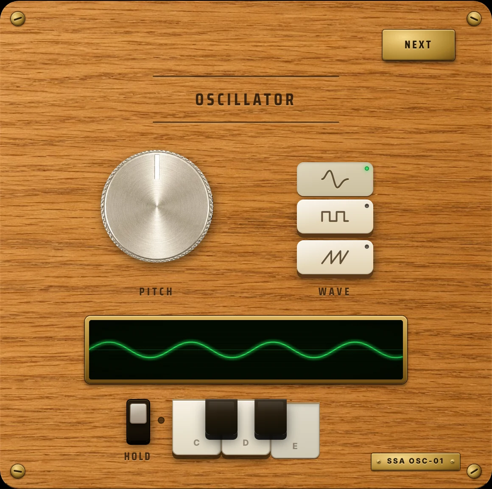
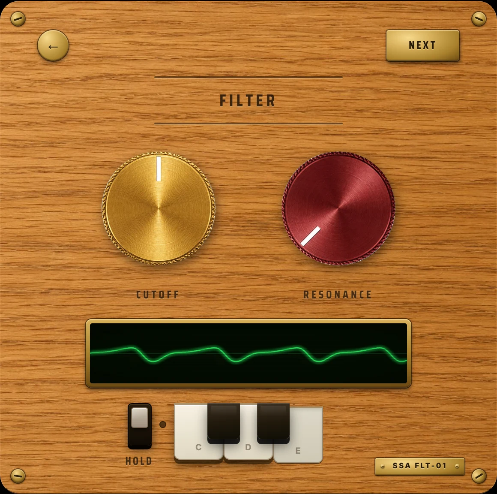
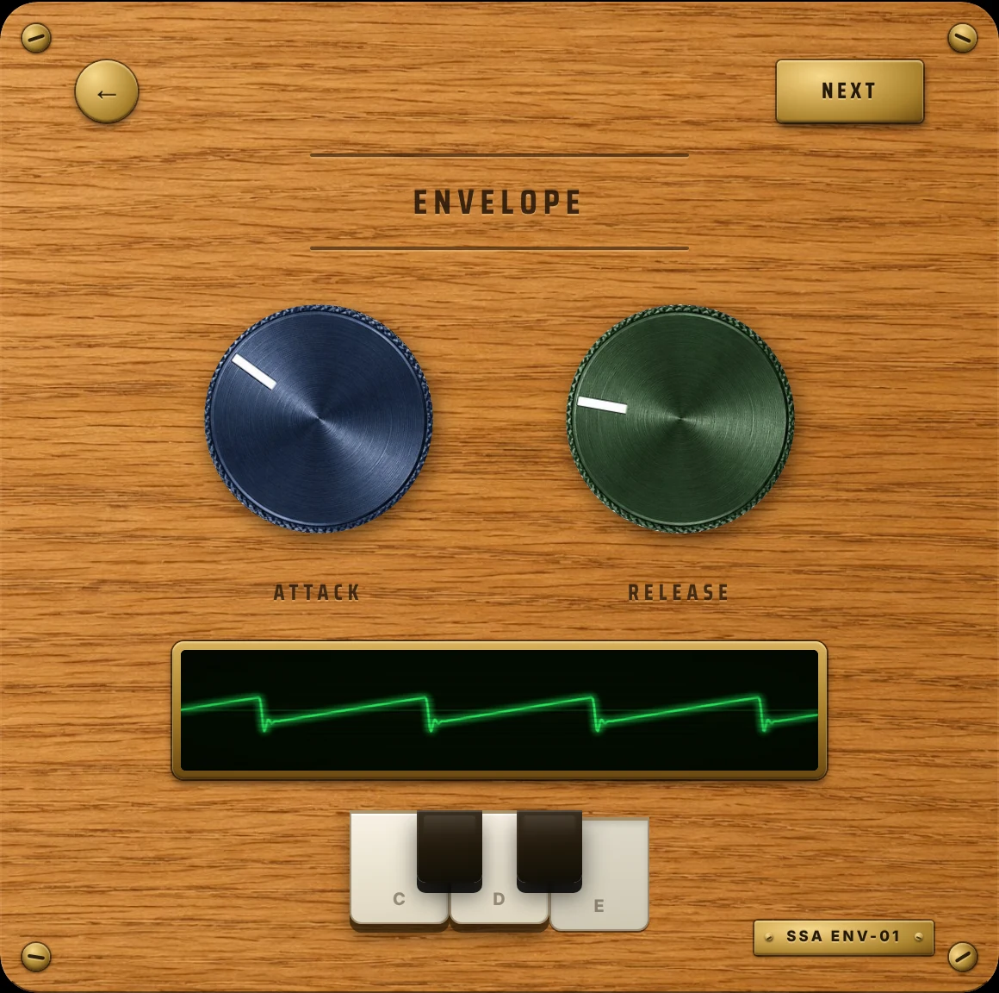
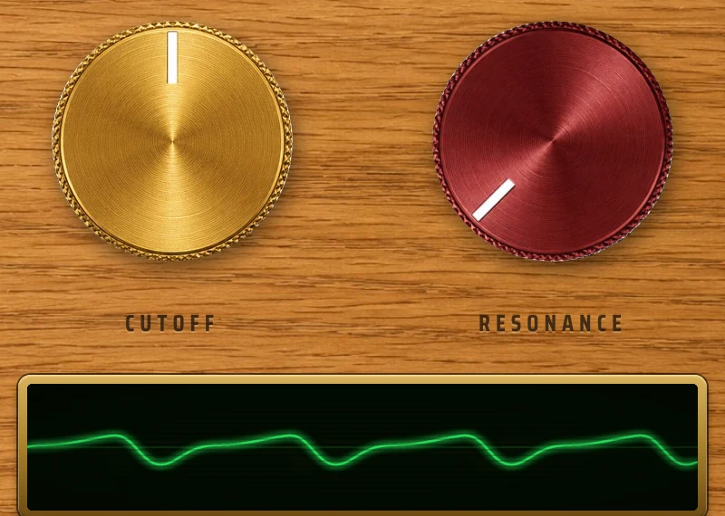
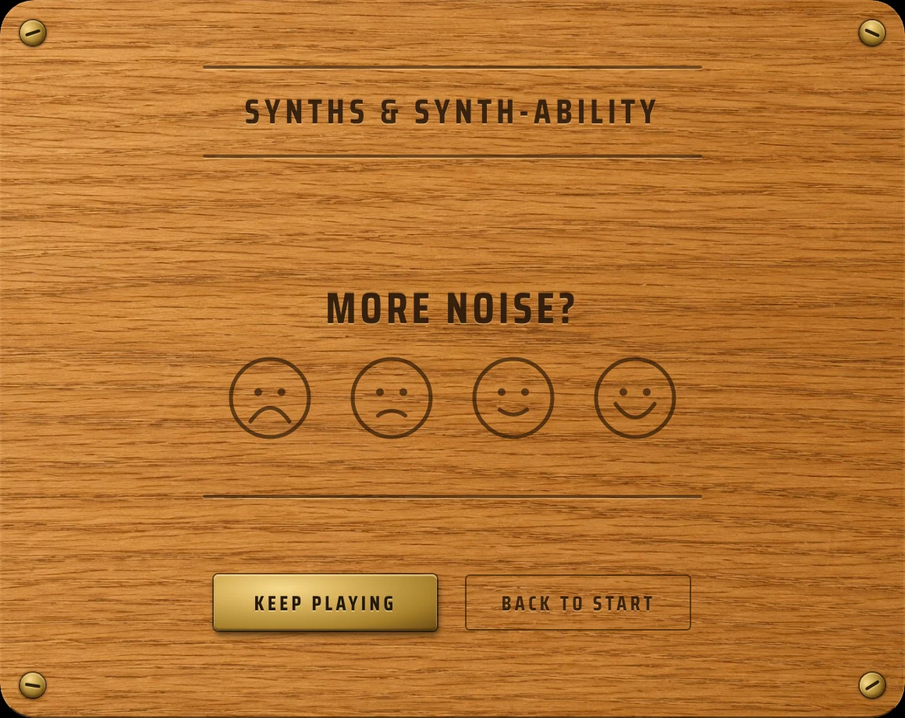

The problem
Pick up a guitar in a shop and you get a sound out of it in about three seconds. Sit down at a synth and it's like the cockpit of an aeroplane: knobs everywhere, words like oscillator, cutoff and resonance, and no obvious way to just make a noise. I wanted to build the way in I never got, for children aged 8 to 12.
One idea per screen
Oscillator, then filter, then envelope, then everything together. Each screen adds one control, so a child never faces the whole synth at once. There is no tutorial: the first tap makes a sound. There are no scores or error states: every setting sounds good.

- Oscillator
- Pitch
- Wave

- Filter
- Cutoff
- Resonance

- Envelope
- Attack
- Release

Turn the cutoff down and the sound goes dark: that one action is both what the app does and the lesson about what a filter is. The app and the lesson were designed as one problem.
How I ran it
The MVP was one line: a child makes one sound. Everything else had to serve it.
Final project for the Project Management with AI programme at Fired Up Space, March to June 2026. I planned it around a pilot lesson at a fictional primary school, so the lesson, the stakeholders and the success criteria had a concrete classroom to plan against.
The first charter was a three-month waterfall plan. I rewrote it as four sprints, because testing in small steps is lower risk for a new format with an unproven audience. Each sprint had its own goal.
-
Sprint 1
13–18 April
wireframes, first lesson draft, AI persona interviews
-
Sprint 2
21 April–2 May
six-screen prototype built, sound and lesson integrated, deployed
-
Sprint 3
5–16 May
prototype refined, tested with the course cohort on 15 May
-
Sprint 4
18 May–1 June
findings written up, decision log, final presentation
Decision 1
Sound first
A class of children wasn't reachable until a pilot, so I used two AI personas, Maya, 10, and Cian, 12, to draft the assumptions before building anything. They pointed the same way: sound first, no wrong answers, and no waiting.
The first lesson put the explanation before the sound, so I rebuilt it: sound first, every time. The interface followed, with one idea per screen. In May I tested the prototype with the course cohort.
Decision log, April- BeforeExplanation, then sound
- AfterSound first, every time
Decision 2
Measure the right thing
Before the pilot, I rewrote its success criteria so each one could be measured cleanly.
Decision log, 28 May
- Changed
The enjoyment rating went from five faces to four.
WhyBoth upper faces are clearly smiling, so the 80% target is a clean pass or fail.
- Removed
"The teacher can run the lesson without me" as a success criterion.
WhyThe teacher runs the pilot without me by definition, so it can't be a measure. It became the first debrief question: "Would you run this again?"
Decision 3
Feedback in, change out
The cohort session on 15 May produced seven points. I sorted them:
Decision log, 15 MayFix now
the welcome screen, rebuilt in the next sprint. The knob that wouldn't turn to the right works now.
Backlog
record and name your sound, moved to version two
Won't do
an explanation button on every control, because it would break one idea per screen
Still open
which devices to support, and where it fits in the school day
What went wrong, and what I did
Each of these is in the decision log, with the date and the reason.
- 13 May
The audio cut out between screens, because each screen was a separate page.
What I didRebuilt the prototype as one page with a shared audio engine, so sound carries across all six screens.
- 20 May
The roadmap had fallen behind the real state of the project.
What I didRestructured it as Done, Now, Next and Later, to match where the project actually was.
- April
Tracking had split across a duplicate WBS and a separate Kanban board.
What I didMerged them into one database with five views, as the single source of truth.
- April
The first communication protocol was over-engineered for a project this size.
What I didCut it to four touchpoints: weekly update, approvals, testing and final.
How I used AI
AI was a tool on every part of the project. The scope, the plan and every decision in the log were mine.
- What AI did
Research on synthesis, the two child personas, the interface code, the images and drafts of the presentation.
What I didSet the scope and the plan, made the decisions, and checked the AI's output against the project files.
- Where it went wrong
It stated project status from memory instead of reading the files, and once listed a backlogged feature as shipped.
What I didCaught it, and set a rule: read the source file before stating anything.
- Where it went wrong
It added content nobody had asked for.
What I didRemoved it and set a rule: state the plan, get it confirmed, then produce, one thing at a time.
Where it stands
A working six-screen prototype, live in the browser and tested with the course cohort. A few children have tried it informally. The classroom pilot has not been run yet.
The pilot will measure three things: that 80% of children make their first sound, that 80% pick a smiling face on the four-face rating, and the teacher's answer to "Would you run this again?"
After the pilot: version two, with record, name and save your sound, then more lessons on filter modulation, LFOs and sequencing.